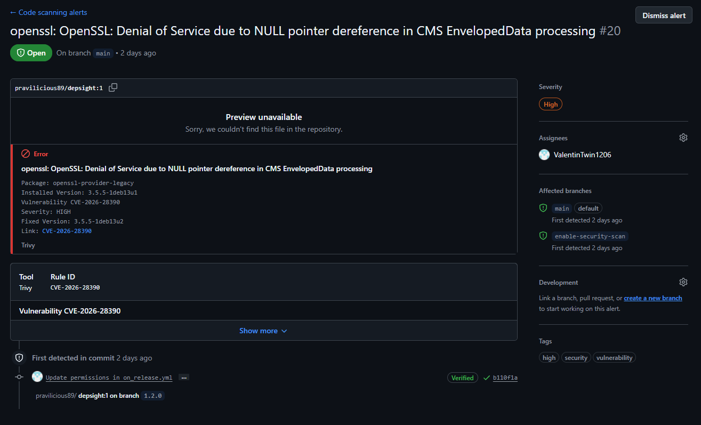

CI/CD¶
Overview¶
Continuous Integration and Continuous Delivery (CI/CD) automate the steps between writing code and shipping it to users. A CI pipeline typically checks out the source, runs linters, type checkers, and tests, and then builds a distributable artifact. If all checks pass, a CD pipeline publishes the artifact to a package registry, a container registry, or both. Automating these steps eliminates manual errors, enforces quality gates on every change, and ensures that the released artifact is always built from a known-good state of the codebase.
The Depsight project uses GitHub Actions for its CI/CD pipeline. GitHub Actions is a workflow automation platform built into GitHub that executes jobs in response to repository events such as pushes, pull requests, and releases. Workflows are defined as YAML files inside the .github/workflows/ directory and run on GitHub-hosted virtual machines. A typical .github folder looks like this:
.github/
├── actions/ # composite actions shared across workflows
├── scripts/ # shell or Python scripts called from run: steps
└── workflows/
GitHub Actions Workflows¶
Depsight provides four entry-point workflows that trigger the CI/CD pipeline:
- On Pull Request — quality gate on every PR to
main; lints, type-checks, tests, and builds the wheel without publishing - On Push — post-merge guard that re-runs the full pipeline on every push to
main; never publishes - On Dispatch — manual trigger for on-demand builds; supports toolchain version selection and optional wheel artifact upload
- On Release — fires on a published GitHub Release; publishes the wheel to PyPI and pushes the Docker image to Docker Hub
Each responds to a different GitHub event and delegates the heavy lifting to build.yml via workflow_call. The entry points differ in how they determine version numbers, which inputs they forward, and whether they trigger a release publish.
Why separate On Push and On Release?
Triggering publishing on a push to main would couple every merge to a release, force version bumps to precede each merge, and break the tag-to-artifact mapping. Using release: [published] ties each publish to an immutable, human-authored git tag — the single source of truth for shipped artifacts. On Push complements it by re-running CI on main HEAD after every merge, catching regressions that slip past pre-merge checks (for example, from squash-merges or direct pushes).
On Pull Request¶
The on_pullrequest.yml workflow runs automatically when a pull request is opened or updated against the main branch. It calls build.yml with is_release: false, which means the pipeline lints, type-checks, tests, and builds the wheel but does not publish anything.
Documentation-only PRs are detected at the job level rather than via paths-ignore. A dedicated changes job uses dorny/paths-filter to decide whether the diff touches anything outside README.md, docs/**, and mkdocs.yml. If it does not, the parse-version and call-build jobs are skipped.
jobs:
changes:
runs-on: ubuntu-latest
outputs:
code: ${{ steps.filter.outputs.code }}
steps:
- uses: actions/checkout@v4
- id: filter
uses: dorny/paths-filter@v3
with:
predicate-quantifier: 'every'
filters: |
code:
- '!README.md'
- '!docs/**'
- '!mkdocs.yml'
call-build:
needs: [changes, parse-version]
if: needs.changes.outputs.code == 'true'
uses: ./.github/workflows/build.yml
...
A trailing ci-result sentinel job always runs and reports the aggregated outcome of call-build. This job is the one configured as a required status check in branch protection. On docs-only PRs, call-build is skipped and ci-result reports success; on code PRs, ci-result mirrors the build outcome. Without this shim, a docs-only PR would leave the required check pending forever because paths-ignore suppresses the workflow status entirely.
ci-result:
needs: [call-build]
if: always()
runs-on: ubuntu-latest
steps:
- run: |
result="${{ needs.call-build.result }}"
if [[ "$result" == "failure" || "$result" == "cancelled" ]]; then
exit 1
fi
On Push¶
The on_push.yml workflow runs on every push to main that touches anything outside README.md, docs/**, and mkdocs.yml. It is identical in structure to On Pull Request but uses a simple paths-ignore filter because there is no required-check status to keep green on merge commits. Like the PR workflow, it calls build.yml with is_release: false — nothing is published.
This workflow guards main HEAD against regressions that can slip past PR review, such as out-of-order merges, branch-protection bypasses, or a stale PR merged without re-running CI.
On Dispatch¶
The on_dispatch.yml workflow is triggered manually from the GitHub Actions UI. It exposes inputs that let the operator optionally override the Python version and the uv version. The Python version defaults to the value in .python-version if left empty. Like the pull request workflow, it calls build.yml with is_release: false, so nothing is published to PyPI or Docker Hub. This workflow is useful for testing a specific configuration or producing a pre-release wheel for local validation.
on:
workflow_dispatch:
inputs:
depsight_version:
description: "Depsight version (must match pyproject.toml, e.g. 1.0.0)"
required: true
type: string
python_version:
description: "Python version override (leave empty to use .python-version)"
required: false
default: ""
type: string
uv_version:
description: "uv version (e.g. 0.11.1)"
required: false
default: "0.11.1"
type: string
upload_artifact:
description: "Upload the wheel as a workflow artifact"
required: false
default: false
type: boolean
On Release¶
The on_release.yml workflow fires when a GitHub Release is published. It first verifies that the release tag is PEP 440 compliant, then calls build.yml with is_release: true. This flag enables the publish steps that upload the wheel to PyPI and push the Docker image to Docker Hub. The workflow forwards the PYPI_TOKEN and DOCKER_PAT secrets so that the reusable workflow can authenticate with both registries.
The checkout step pins ref to the release tag so the build runs against the exact commit that was tagged, not the current tip of main.
on:
release:
types: [published]
permissions:
actions: read
contents: write
jobs:
verify-tag:
steps:
- uses: actions/checkout@v4
with:
ref: ${{ github.event.release.tag_name }}
...
call-build:
uses: ./.github/workflows/build.yml
with:
is_release: true
...
secrets:
PYPI_TOKEN: ${{ secrets.PYPI_TOKEN }}
DOCKER_PAT: ${{ secrets.DOCKER_PAT }}
Reusable Build Workflow¶
The build.yml workflow is the single source of truth for all build, test, and publish logic. It is never triggered directly by a repository event. Instead, the three entry-point workflows call it via workflow_call, passing the version, toolchain pins, and the is_release flag that controls whether artifacts are published.
flowchart LR
subgraph Triggers
PR["on_pullrequest.yml"]
PU["on_push.yml"]
DI["on_dispatch.yml"]
RE["on_release.yml"]
end
subgraph "build.yml"
direction TB
V["Verify version"]
B["Lint, test & build wheel"]
A["Upload artifact"]
FG["Filesystem vulnerability gate\n(source + deps + secrets)"]
D["Build Docker image"]
IG["Container vulnerability gate\n(OS + libraries)"]
P["Publish to PyPI"]
PD["Push Docker image"]
V --> B --> A
B --> FG --> D --> IG
IG --> P
IG --> PD
end
PR -- "is_release: false" --> V
PU -- "is_release: false" --> V
DI -- "is_release: false" --> V
RE -- "is_release: true" --> VThe workflow accepts the following inputs and secrets:
| Input / Secret | Type | Purpose |
|---|---|---|
is_release |
boolean | Enables PyPI and Docker Hub publish steps |
uv_version |
string | uv version to install in the DevContainer |
python_version |
string | Python version override — falls back to .python-version if omitted |
depsight_version |
string | Expected version (validated against pyproject.toml) |
upload_artifact |
boolean | Attach the wheel as a downloadable workflow artifact |
PYPI_TOKEN |
secret | API token for PyPI publishing |
DOCKER_PAT |
secret | Personal access token for Docker Hub |
Build and Publish Pipeline¶
Version Verification¶
The workflow compares the depsight_version input against the version in pyproject.toml and fails immediately on a mismatch, preventing releases with inconsistent metadata.
Lint, Test and Build Wheel¶
The wheel is built inside the same DevContainer used for local development. The devcontainers/ci action spins up the container defined in .devcontainer/devcontainer.json, ensuring the CI environment is identical to the local setup. Inside the container the step verifies lockfile integrity, activates the virtual environment, runs the full quality pipeline (linting, type checking, tests), and only then builds the wheel.
- name: Lint, test & build wheel
uses: devcontainers/ci@v0.3
with:
configFile: .devcontainer/devcontainer.json
runCmd: |
set -e
source .venv/bin/activate
ruff check src/ tests/
mypy src/
python -m pytest tests/ -v --tb=short
uv build
Upload Wheel Artifact¶
When upload_artifact is true, the wheel is attached to the workflow run with a 14-day retention period. This is useful for validating a pre-release build without publishing to PyPI.
- name: Provide wheel as workflow artifact
if: ${{ inputs.upload_artifact }}
uses: actions/upload-artifact@v4
with:
name: depsight-wheel
path: dist/*.whl
retention-days: 14
if-no-files-found: error
Filesystem Vulnerability Gate¶
Immediately after the wheel is built, a Trivy filesystem scan checks the repository for CRITICAL Python dependency vulnerabilities and leaked secrets. If anything is found the pipeline fails before both the wheel and container image are published.
- name: Filesystem vulnerability gate (block on CRITICAL)
uses: aquasecurity/trivy-action@master
with:
scan-type: "fs"
scan-ref: "."
format: "table"
exit-code: "1"
ignore-unfixed: true
scanners: "vuln,secret"
severity: "CRITICAL"
Build Docker Image¶
Docker Buildx is initialised on every run so the image build can use BuildKit features. The image is built on every workflow run so that Dockerfile issues are caught early. The load: true option imports the image into the local daemon without pushing. Python and uv versions are forwarded as build arguments to match the CI test environment. Two tags are applied: the exact version and latest.
- name: Set up Docker Buildx
uses: docker/setup-buildx-action@v3
- name: Build Docker image
uses: docker/build-push-action@v6
with:
context: .
load: true
build-args: |
PYTHON_VERSION=${{ inputs.python_version }}
UV_VERSION=${{ inputs.uv_version }}
tags: |
${{ vars.DOCKER_REPOSITORY }}:${{ inputs.depsight_version }}
${{ vars.DOCKER_REPOSITORY }}:latest
Container Vulnerability Gate¶
After the image is built, a Trivy image scan checks the full container inclduing OS packages and installed Python libraries for CRITICAL vulnerabilities. If any unfixed critical CVE is found the pipeline fails and no artifacts are published.
- name: Container vulnerability gate (block on CRITICAL)
uses: aquasecurity/trivy-action@master
with:
image-ref: "${{ vars.DOCKER_REPOSITORY }}:${{ inputs.depsight_version }}"
format: "table"
exit-code: "1"
ignore-unfixed: true
vuln-type: "os,library"
scanners: "vuln"
severity: "CRITICAL"
Two gates, two artifacts
Both vulnerability gates run unconditionally on every build to ensure neither the wheel nor the image is published with known critical vulnerabilities. Continuous monitoring with SARIF upload is handled separately by the Security Pipeline.
Publish Wheel to PyPI (release-only)¶
Triggered only on release events, this step publishes the Depsight wheel to PyPI. The uv build step runs inside the DevContainer, but uv publish runs on the bare GitHub runner where uv is not pre-installed. The astral-sh/setup-uv action installs the pinned version first, and the PYPI_TOKEN secret is passed via UV_PUBLISH_TOKEN.
- name: Install uv
if: ${{ inputs.is_release }}
uses: astral-sh/setup-uv@v5
with:
version: ${{ inputs.uv_version }}
- name: Upload wheel to PyPI
if: ${{ inputs.is_release }}
env:
UV_PUBLISH_TOKEN: ${{ secrets.PYPI_TOKEN }}
run: uv publish
Push Docker Image (release-only)¶
Triggered only on release events, this step pushes the Depsight image to Docker Hub. Because the image was already built earlier in the same job with load: true — so the container vulnerability gate could scan it — it is already present in the runner's local Docker daemon under both the version and latest tags. The release step therefore authenticates and calls docker push directly, avoiding a second full docker build run.
- name: Log in to Docker Hub
if: ${{ inputs.is_release }}
uses: docker/login-action@v3
with:
username: ${{ vars.DOCKER_USERNAME }}
password: ${{ secrets.DOCKER_PAT }}
- name: Push Docker image
if: ${{ inputs.is_release }}
run: |
docker push ${{ vars.DOCKER_REPOSITORY }}:${{ inputs.depsight_version }}
docker push ${{ vars.DOCKER_REPOSITORY }}:latest
Docker Hub Credentials
DOCKER_USERNAME is configured as a repository variable and DOCKER_PAT as a repository secret. The PAT requires the Read & Write permission scope for the target repository on Docker Hub.
Security Pipeline¶
Depsight uses a two-layer security model: continuous vulnerability monitoring via a dedicated workflow, and blocking vulnerability gates inside the build pipeline.
Vulnerability Monitoring¶
The trivy.yml workflow runs independently of the build pipeline. It performs two scans — a filesystem scan of the repository source and an image scan of a locally built Docker image (never pushed). Both scans always render findings as a formatted table in the Actions log. In addition, SARIF reports are generated and uploaded to the Security tab for most triggers:
| Trigger | Console output | SARIF | Uploaded to Security tab |
|---|---|---|---|
push to main |
Yes | Yes | Yes |
pull_request to main |
Yes | Yes | Yes |
schedule (weekly) |
Yes | Yes | Yes |
workflow_dispatch on main |
Yes | Yes | Yes |
workflow_dispatch on any other branch |
Yes | No | No |
The console scans run unconditionally on every trigger, giving immediate visibility in the Actions log. When SARIF output is also enabled, results are uploaded to the repository's Security tab via the CodeQL upload action (see section below).
Filesystem Scan¶
The filesystem scan (trivy fs .) checks the repository source for Python dependency vulnerabilities and leaked secrets. It runs before the Docker image is built, providing fast feedback without waiting for a container build.
The console step runs unconditionally on every trigger and renders findings as a formatted table directly in the Actions log.
- name: Trivy filesystem scan (console)
uses: aquasecurity/trivy-action@master
with:
scan-type: "fs"
scan-ref: "."
format: "table"
exit-code: "0"
ignore-unfixed: true
scanners: "vuln,secret"
severity: "CRITICAL,HIGH"
The SARIF step runs conditionally — only on pushes, pull requests, scheduled runs, and manual dispatches targeting main. It writes findings to a SARIF file instead of the log.
- name: Trivy filesystem scan (SARIF)
if: ${{ github.event_name != 'workflow_dispatch' || github.ref == 'refs/heads/main' }}
uses: aquasecurity/trivy-action@master
with:
scan-type: "fs"
scan-ref: "."
format: "sarif"
output: "trivy-fs-results.sarif"
exit-code: "0"
ignore-unfixed: true
scanners: "vuln,secret"
severity: "CRITICAL,HIGH"
The upload step submits the SARIF file to GitHub under the trivy-filesystem category, making findings visible in Security → Code scanning (see GitHub Security Tab).
- name: Upload filesystem scan results to GitHub Security tab
if: ${{ always() && (github.event_name != 'workflow_dispatch' || github.ref == 'refs/heads/main') }}
uses: github/codeql-action/upload-sarif@v4
with:
sarif_file: "trivy-fs-results.sarif"
category: "trivy-filesystem"
Image Scan¶
The image scan targets the locally built Docker image and checks OS packages and installed Python libraries for vulnerabilities. It runs after the Docker image is built, complementing the filesystem scan with OS-level coverage.
The console step runs unconditionally on every trigger and renders findings as a formatted table in the Actions log.
- name: Trivy image scan (console)
uses: aquasecurity/trivy-action@master
with:
image-ref: "${{ vars.DOCKER_REPOSITORY }}:${{ github.sha }}"
format: "table"
exit-code: "0"
ignore-unfixed: true
vuln-type: "os,library"
scanners: "vuln"
severity: "CRITICAL,HIGH"
The SARIF step applies the same conditional logic as the filesystem scan — it only runs when results should be tracked in the Security tab.
- name: Trivy image scan (SARIF)
if: ${{ github.event_name != 'workflow_dispatch' || github.ref == 'refs/heads/main' }}
uses: aquasecurity/trivy-action@master
with:
image-ref: "${{ vars.DOCKER_REPOSITORY }}:${{ github.sha }}"
format: "sarif"
output: "trivy-image-results.sarif"
exit-code: "0"
ignore-unfixed: true
vuln-type: "os,library"
scanners: "vuln"
severity: "CRITICAL,HIGH"
The upload step submits findings under the trivy-image category, keeping container vulnerabilities distinct from filesystem findings in the Security tab.
- name: Upload image scan results to GitHub Security tab
if: ${{ always() && (github.event_name != 'workflow_dispatch' || github.ref == 'refs/heads/main') }}
uses: github/codeql-action/upload-sarif@v4
with:
sarif_file: "trivy-image-results.sarif"
category: "trivy-image"
GitHub Security Tab¶
Once a SARIF file is uploaded via the github/codeql-action/upload-sarif action, GitHub parses it and surfaces each finding as a code scanning alert under Security → Code scanning. Alerts are deduplicated across scan runs and tracked per branch, so a vulnerability first detected on main will show as also present on any branch where it persists.

Each alert includes the CVE identifier, the affected package, the installed and fixed versions, the severity rating, the detecting tool (Trivy), and the branches where the issue is active. Alerts remain open until the vulnerability is resolved or explicitly dismissed, providing a persistent audit trail.

Resolving the CVE
The runtime stage of the Dockerfile initially did not run apt-get update && apt-get upgrade, leaving OS packages at the version baked into the base image. Adding these two commands to the runtime stage ensured that the latest security patches were applied during the image build, which resolved the CVE.
The two scan categories (trivy-filesystem and trivy-image) are tracked independently, so findings from Python dependency CVEs and OS-level vulnerabilities are separated and can be filtered individually in the Security tab.